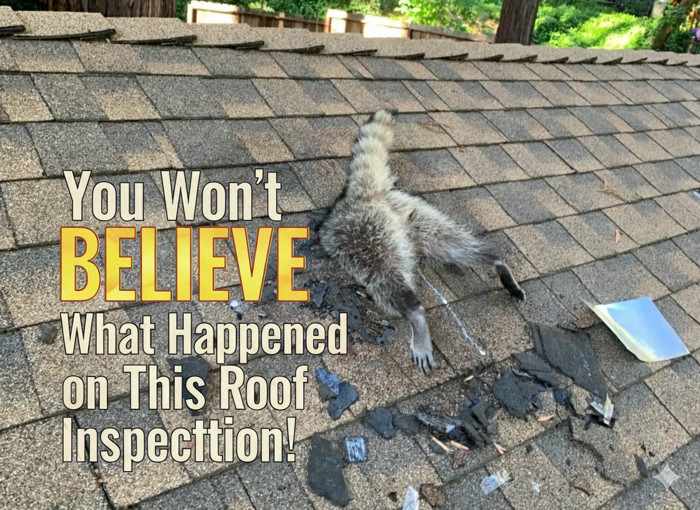

As August winds down and September approaches, homeowners across South Central Iowa are asking the same question:
👉 Will my roof make it through another Iowa Fall?
At Hackney Roofing, we see it every year — small summer storm damage turns into major winter leaks once snow and ice arrive. Don’t wait until freezing temperatures trap you with no options.
5 Signs Your Roof May Not Survive the Season
- Curling, Cracked, or Missing Shingles – Often caused by hail and high winds.
- Leaks or Water Stains in Your Attic – A red flag that melting snow will make worse.
- Granules Collecting in Gutters – A sign shingles are breaking down.
- Uneven or Sagging Rooflines – Indicates structural stress that snow will amplify.
- Age (15–20 Years Old) – Most roofs in Iowa need replacement around this point.
Why Fall is the Best Time to Replace or Repair Your Roof
- Milder Weather – Roofing crews can work safely and quickly before winter sets in.
- Prevent Ice Dams & Attic Condensation – Proper ventilation and underlayment now protect against freeze–thaw cycles.
- Beat the Insurance Deadlines – Many hail and storm claims need to be filed before year’s end.
- Peace of Mind – Head into winter knowing your roof will keep your family warm and dry.
Hackney Roofing: Serving South Central Iowa with Trust & Expertise
From Indianola to Chariton, Knoxville to Centerville, Hackney Roofing has helped hundreds of Iowa homeowners prepare for winter. We’re a local company that knows the unique challenges of Iowa weather — and we don’t leave until the job is done right.
Schedule Your Free Inspection Today
Our September calendar is filling fast. Don’t wait until snow is in the forecast.
📞 Call Hackney Roofing at (641) 203‑8046
Let us help you protect your biggest investment before winter hits.
Request a Free Quote